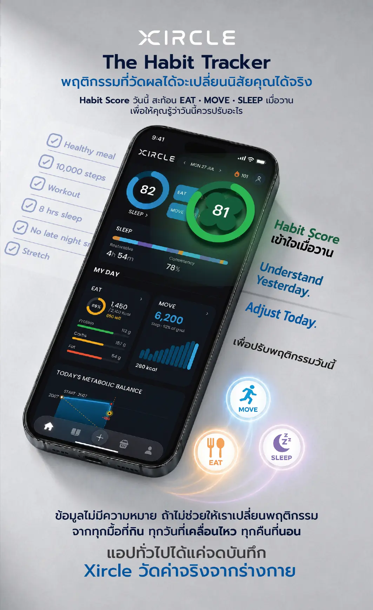
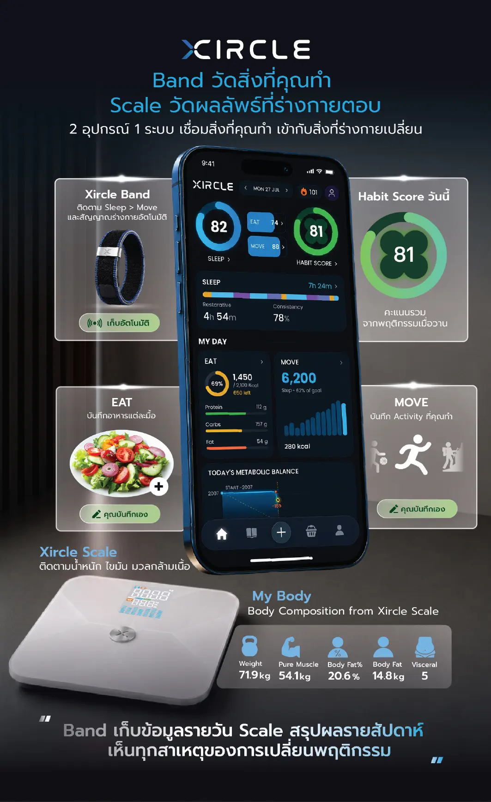
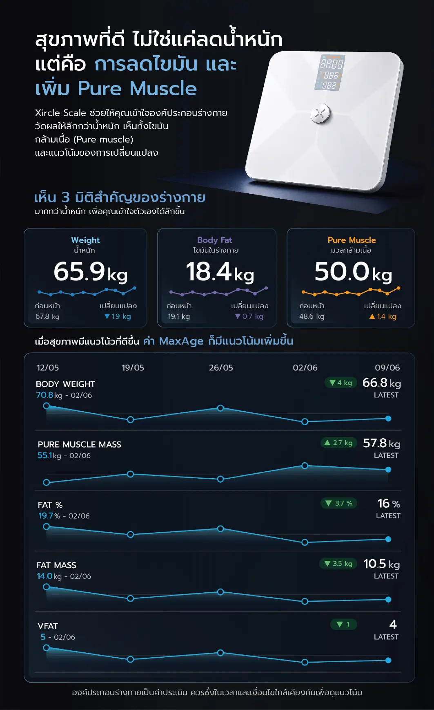
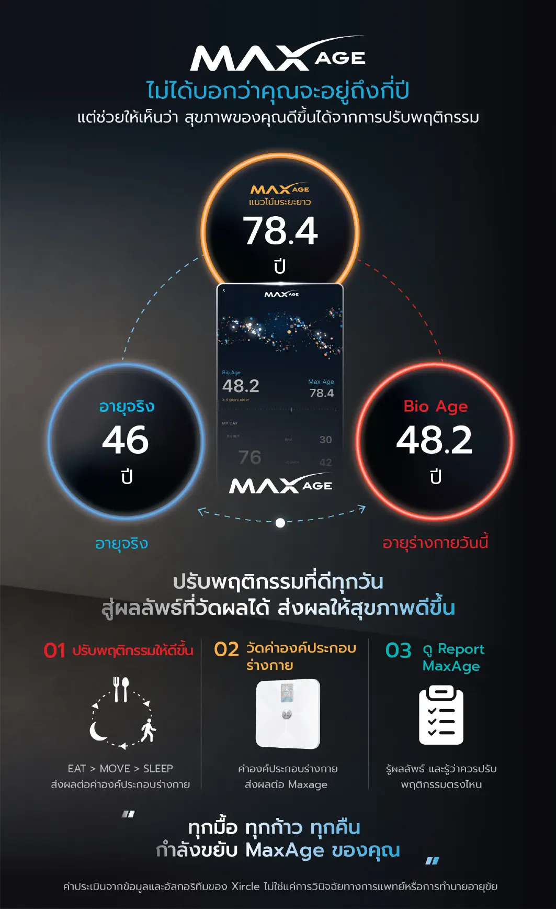
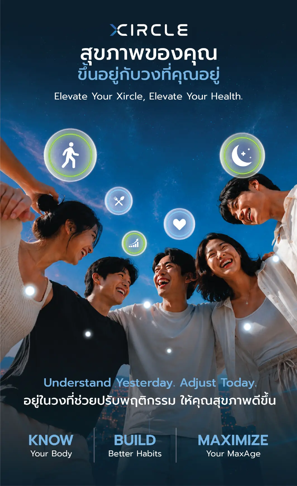
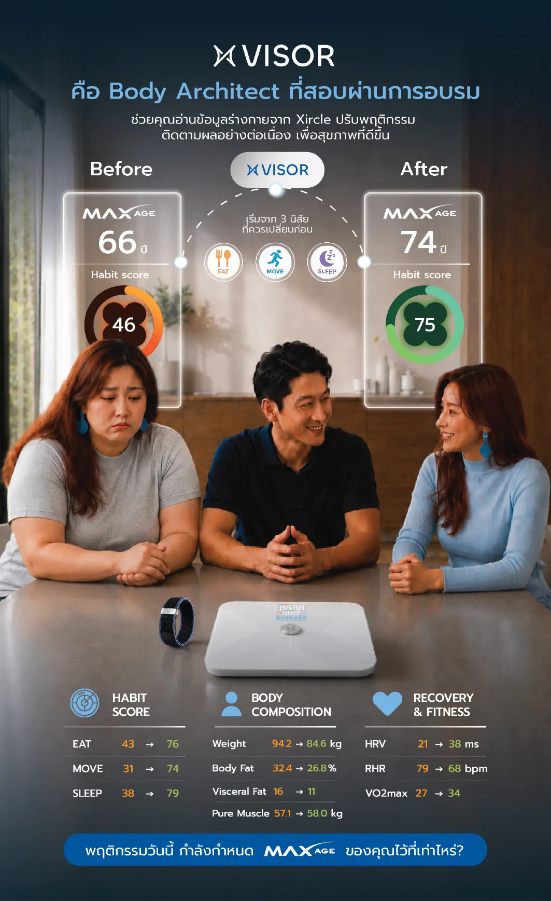

01 · DO
ใช้ชีวิตตามปกติ
กิน เดิน ออกกำลัง นอน และทำกิจวัตรของคุณ ไม่ต้องสร้างข้อมูลเทียมเพื่อให้แอปดูดี
ชีวิตจริงคือ Sourceไม่ใช่แอปที่มีไว้แค่ติ๊กว่า “ทำแล้ว” แต่เป็นภาพรวมที่ทำให้เห็นว่า สิ่งที่กิน สิ่งที่ขยับ และการนอน กำลังพาร่างกายไปทางไหน
Xircle เชื่อม Habit, Band, Scale และการบันทึกอาหารเข้าไว้ด้วยกัน เพื่อให้คุณเข้าใจเมื่อวาน แล้วเลือกสิ่งที่ควรปรับวันนี้ได้ชัดขึ้น
แต่มันเปลี่ยนจากสิ่งเล็ก ๆ ที่เกิดซ้ำทุกวัน Xircle ทำหน้าที่เปลี่ยนเหตุการณ์เหล่านั้นให้กลายเป็นภาพที่อ่านง่าย และใช้ตัดสินใจต่อได้
กิน เดิน ออกกำลัง นอน และทำกิจวัตรของคุณ ไม่ต้องสร้างข้อมูลเทียมเพื่อให้แอปดูดี
ชีวิตจริงคือ Sourceระบบรวมพฤติกรรมกับข้อมูลจาก Band และ Scale ให้เห็น pattern ที่จำด้วยหัวอย่างเดียวได้ยาก
Data → Patternคะแนนต่ำไม่ใช่คำตัดสิน แต่เป็นสัญญาณให้รู้ว่าจุดไหนควรถูกทดลองปรับก่อน
Understand Yesterday. Adjust Today.
คะแนนที่เห็นเช้านี้สะท้อนพฤติกรรมของเมื่อวานจาก 3 เสา เพื่อให้รู้ว่าอะไรควรได้รับความสนใจก่อน
Body Composition ไม่ได้ถูกเอามารวมใน Habit Score โดยตรง เพราะสิ่งหนึ่งคือพฤติกรรม ส่วนอีกสิ่งคือการตอบสนองของร่างกาย การแยกสองอย่างนี้ออกจากกันทำให้ตีความง่ายกว่า
ไม่ต้องให้เครื่องมือชิ้นเดียวพยายามอธิบายทุกอย่าง แยกบทบาทของข้อมูล แล้วค่อยอ่านมันร่วมกัน

Heart Rate · Sleep · Steps · Heart Rate Zone · Activity
Body Composition · Trend View · MY BODY
พฤติกรรมหนึ่งวันไม่ใช่ผลลัพธ์ระยะยาว แต่การดู trend ช่วยให้เห็นทิศทางได้
Weight + Pure Muscle + Body Fat / Fat Mass ควรถูกอ่านร่วมกัน เพื่อแยกให้เห็นว่าข้างในกำลังเปลี่ยนเป็นอะไร


Habit Score ต่อเนื่อง + Body Composition + Vital Signals ถูกใช้สร้างภาพประเมินของ Bio Age และทิศทางระยะยาวผ่าน MaxAge™
มันมีไว้ช่วยให้เห็นทิศทางและชวนให้กลับมาดูพฤติกรรม ไม่ใช่คำทำนายอายุขัย และภาพ DNA ใน UI เป็น visual metaphor ไม่ใช่ผลตรวจ DNA

Social, Community, Challenges, Team และ X-VISOR ทำให้การเปลี่ยนพฤติกรรมมีบริบทของคนจริงอยู่รอบข้อมูล
ข้อมูลช่วยให้เห็น แต่คนรอบตัวช่วยให้สิ่งใหม่มีโอกาสเกิดซ้ำในชีวิตจริง ระบบจึงไม่ได้จบที่ dashboard
RoutineX คือระบบกิจวัตร ส่วน Habix คือ Nutrition Layer ทั้งสองทำงานร่วมกัน แต่ไม่ใช่สิ่งเดียวกัน
G.U.S.+ · ใยอาหารและ gut support
Protein HMB+ · โปรตีนและ muscle support
Behavior — ไม่มี product ตัวไหนทำแทนได้
AstaMega+ · Vita Matrix

X-VISOR ช่วยคนตัดสินใจว่า “แล้ววันนี้ควรทำอะไรต่อ” โดยไม่ก้าวข้ามไปเป็นการวินิจฉัยหรือรักษาโรค
เริ่มจากสิ่งที่เกิดขึ้นจริง
เข้าใจบริบทก่อนให้คำแนะนำ
ทำให้สิ่งใหม่มีโอกาสเกิดซ้ำ
หน้าแรกเล่าเรื่องเป็นภาพรวม ส่วนหน้าด้านล่างแตกแต่ละระบบให้ลึกขึ้นโดยใช้ Source ชุดเดียวกัน
Health Innovation Ecosystem และภาพรวมของระบบที่ทำงานร่วมกัน
เข้า Ecosystem →Eat · Move · Sleep · Habit Score · Body · MaxAge™
เข้า App Story →Product family, FIVES และ ingredient story ใน claim boundary
เข้า Habix →ABCD และ 28-day fulfillment + coaching rhythm
เข้า RoutineX →CARE · Onboarding · Coaching · Claims · Privacy
เข้า X-VISOR →Mission · Customers · Team · Learning และ operating layer
เข้า XOS →ถ้ามีคนส่งลิงก์นี้ให้คุณ คุยกับคนนั้นต่อได้เลย ให้เขาช่วยพาดูว่า Xircle, RoutineX หรือการเริ่มวัดค่าตั้งต้นแบบไหนเหมาะกับสิ่งที่คุณอยากรู้ตอนนี้